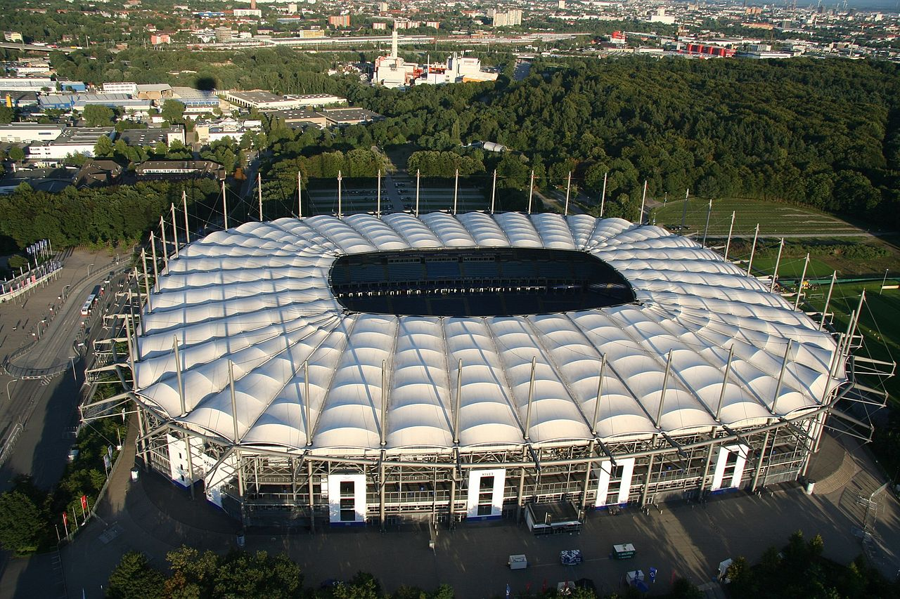

Treinador: Merlin Polzin
Merlin Polzin é um jovem treinador de futebol alemão que se tornou numa das figuras mais promissoras e acarinhadas do Hamburger. Nascido a 1 de novembro de 1990 na própria cidade de Hamburgo, Polzin alcançou o estatuto de herói local ao liderar o histórico clube de regresso à elite do futebol germânico.
Estádio: Volksparkstadion
O Volksparkstadion é a lendária e imponente casa do Hamburger. Este estádio combina a mística do futebol tradicional alemão com o conforto e a modernidade de uma das arenas mais prestigiadas da Europa.

Estilo de Jogo:
O estilo de jogo que Merlin Polzin implementa no Hamburger é pautado pelo protagonismo ofensivo, posse de bola progressiva e alta intensidade física, com foco em sufocar o adversário no seu próprio meio-campo.
"Nur der HSV!"